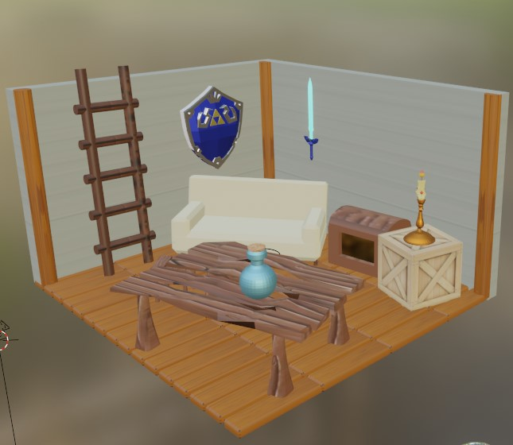
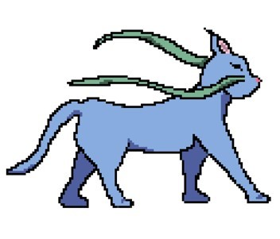

Inès Giorgi
Etudiante A1 IIM, j'aime dormir et manger
Etudiante A1 IIM, j'aime dormir et manger
J'ai du faire une scène ambiance Zelda, en 3D sur Blender.
J'ai créée l'univers et l'histoire du jeu, inspiré de Stray (le jeu du poti chat). Vous allez suivre Uta une chatte où ses chatons se sont fait enlever et les sauvé d'un scientifique dérangé.
J'ai créée un application de musique de l'artiste GOT7, sur Figma et j'ai choisis du noir et du vert comme couleurs principales, avec des typos sans serif pour plus de lisibilité. De plus vous pourrez retrouver toutes les autres activités concernant GOT7 comme des reddif de concert, interviews et comeback. Une appli pour tout les fan.es de GOT7 ;D

Chargement...
Non c'est faux ;D
c'est la course et merci d'avoir regardé mon site